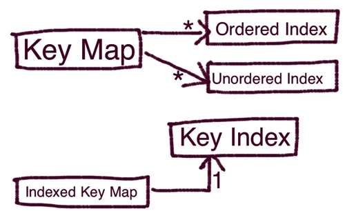
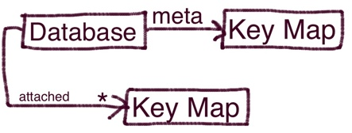

Internal Object Model
Bottom-up:
Files

File
A file represents a filesystem file. It keeps track of the last written position. It's responsible for reading and writing records, keeping a record header and a record trailer with a checksum.
Buffered File
A Buffered File inherits from File and acts as a buffering layer so writes don't have to wait until fs.write returns. Writes are buffered in queue in memory and flushed every 1 second (by default).
Collection
A collection represents an forever-growing ordered list of documents. A Collection uses a File or a Buffered File (optionable) as a way to persist objects when added.
A Collection offers a way to iterate over and filter the entire collection.
Key Maps

Key Map
A Key Map offers a put(key, value) and a get(key) methods that allows you to store and retrieve documents based on a key.
It uses a collection underneath to store the object versions.
A Key Map can zero or many user-defined value-based indexes, which we will cover later.
This class of objects is never instantiated, as it is rather abstract.
Indexed Key Map
Indexed Key Map inherits from Key Map and offers a in-memory lookup index by key to speedup gets.
Unlike a Collection, an Indexed Key Map only remembers the latest version of each object.
An Indexed Key Map allows the user to easily scan the entire collection using it's index using the .eachInIndex() method.
Atomic
An Indexed Key Map allows you to perform atomic operations on one document using .atomic(key, value_callback, end_callback).
Compact
An Indexed Key Map allows you to compact the underlying collection, making it loose all it's past history.
While this operation is being performed, you can still write to the key map. What happens is that, meanwhile the compacting is in progress, the key map writes to the new collection and the old one at the same time.
Cached Key Map
A Cached Key Map inherits from Indexed Key Map and introduces a transparent memory cache.
Indexes

Alfred supports 3 types of indexes, all in memory.
The first one, a Key Index, we already mentioned on the Indexed Key Map. It's used to speed up key-based look ups. Each Indexed Key Map has one.
The other two, Ordered and Unordered Indexes, are functional indexes which the user defines based on the value using a javascript function.
An Unorderd Key Map is a simple memory store for all the index values. You can use it to iterate in memory over the entire index values.
An Ordered Key Map is an in-memory b+tree that allows much fastar range filtering and matching.
Database - the meta layer

A database is a dynamic collection of Key Maps.
You can attach and detach Key maps to and from a Database.
You can access the Key Maps as direct named properties of a database once it is attached.
A database keeps a meta Key Map where it persists all the attached Key Maps and respective indexes so it can be reconstituted after restart.